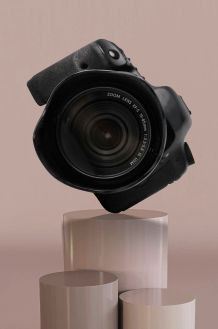

<div class="mobile-menu js-menu-container">
  <div class="mobile-menu__content">
    <button
      class="mobile-menu__close js-close-menu"
      aria-label="'close menu' button"
    >
      <svg class="mobile-menu__close-svg" width="32" height="32">
        <use href="../img/icons.svg#icon-close" />
      </svg>
    </button>
    <ul class="mobile-menu__list">
      <li class="mobile-menu__item">
        <a
          class="mobile-menu__link"
          href="#about"
          aria-label="link to 'about' block"
          >about us</a
        >
      </li>
      <li class="mobile-menu__item">
        <a
          class="mobile-menu__link"
          href="#courses"
          aria-label="link to 'courses' block"
          >our courses</a
        >
      </li>
      <li class="mobile-menu__item">
        <a
          class="mobile-menu__link"
          href="#mentors"
          aria-label="link to 'mentors' block"
          >our mentors</a
        >
      </li>
      <li class="mobile-menu__item">
        <a
          class="mobile-menu__link"
          href="#reviews"
          aria-label="link to 'reviews' block"
          >reviews</a
        >
      </li>
      <li class="mobile-menu__item">
        <a
          class="mobile-menu__link"
          href="#contacts"
          aria-label="link to 'contacts' block"
          >contacts</a
        >
      </li>
    </ul>
    <picture>
      <source
        media="(min-width: 768px)"
        srcset="
          ../img/menu/menu-img_tablet@1x.png 1x,
          ../img/menu/menu-img_tablet@2x.png 2x
        "
      />
      
    </picture>
  </div>
</div>
